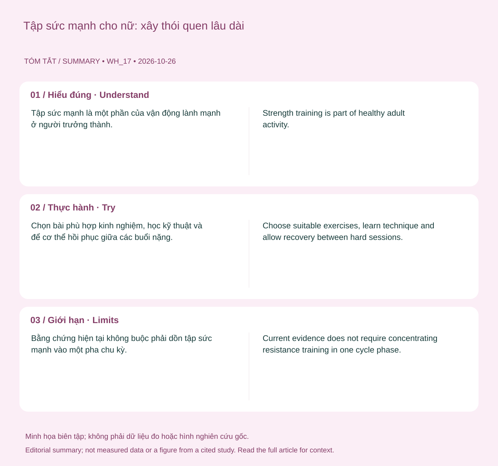

Tập sức mạnh là một phần của vận động lành mạnh ở người trưởng thành. Lợi ích đến từ thực hành phù hợp và tăng tiến dần; không cần gắn mọi buổi với một đỉnh hormone dự đoán hay hứa trẻ hóa chuyển hóa.
Tình huống minh họa: Bạn muốn tăng sức mạnh nhưng sợ tập tạ làm cơ thể thay đổi ngoài mong muốn. Thảo luận mục tiêu và tiến triển cụ thể sẽ hữu ích hơn một lời hứa về hình thể hoặc trẻ hóa chuyển hóa.
Tổng lượng protein, kích thích tập và lợi ích tăng thêm
Tập kháng lực tạo kích thích thích nghi; protein cung cấp các amino acid cho quá trình chuyển hóa và xây dựng mô. Nhưng tăng một thành phần không bù được mọi thiếu hụt của chương trình. Nếu thiếu năng lượng, không có tiến triển tập hoặc hồi phục kém, chỉ thêm bột protein chưa chắc giải quyết đúng vấn đề.

Tổng quan Morton và cộng sự tổng hợp 49 thử nghiệm ở người khỏe mạnh, ghi nhận lợi ích của bổ sung trong bối cảnh tập kháng lực và lợi ích tăng thêm giảm dần quanh tổng lượng khoảng 1,6 g/kg/ngày. Đây là ước tính nhóm, không phải công tắc mà vượt qua một gram là vô ích hoặc thấp hơn một gram thì mất cơ. Cũng không nên gọi mức khuyến nghị dinh dưỡng chung là “chỉ để chống chết đói”.
Amino acid như leucine tham gia tín hiệu, nhưng không có một liều kích hoạt duy nhất bảo đảm kết quả ở mọi độ tuổi và bữa ăn. Đối với người dùng, nên tính tổng từ cả thực phẩm, phân bố phù hợp và khả năng duy trì trước khi lo một cửa sổ vài chục phút. Bằng chứng trên người khỏe mạnh không chứng nhận chế độ giàu protein cho người có bệnh thận hoặc chỉ định dinh dưỡng riêng. 4 5 3
Từ khác biệt sinh lý đến giáo án: khoảng cách cần thận trọng
Biến đổi hormone theo chu kỳ là có thật, nhưng điều đó không tự chứng minh một lịch tập theo pha tốt hơn cho tất cả. Cần phân biệt cơ chế có thể xảy ra, khác biệt đo được trong thí nghiệm và lợi ích của một giáo án dài hạn. Một quan sát về nhiệt độ hoặc chuyển hóa không đủ để kết luận phải giảm tạ hay tăng protein vào một tuần cố định.
Tổng quan McNulty và cộng sự ghi nhận ảnh hưởng trung bình nhỏ, mức chắc chắn bị hạn chế bởi chất lượng và khác biệt giữa các nghiên cứu. Tổng quan về tập kháng lực năm 2023 cũng nhấn mạnh sự thiếu nhất quán và vấn đề xác định pha. Như vậy, giữ được ý tưởng lắng nghe chu kỳ không cần đi kèm lời hứa tăng cơ tốt hơn nhờ canh ngày.
Ứng dụng thực tế là theo dõi triệu chứng, mức gắng sức và hiệu suất trong điều kiện có thể so sánh. Một mẫu riêng lặp lại qua vài chu kỳ có thể giúp sắp xếp buổi tập thuận tiện hơn. Nhưng nếu mẫu không rõ, bạn không cần tạo ra nó. Kỹ thuật, tăng tải hợp lý, ăn đủ và khả năng duy trì vẫn là nền tảng của chương trình. 6 2
Năng lượng sẵn có: công thức là điểm khởi đầu, không phải chẩn đoán
Năng lượng sẵn có xem xét phần năng lượng còn lại cho hoạt động cơ thể sau chi phí vận động, thường được mô tả theo khối lượng cơ thể không mỡ. Khái niệm này giúp hiểu vì sao một người vẫn ăn đều nhưng chưa đáp ứng được tải tập hoặc nhu cầu sinh học. Cân nặng đơn lẻ cũng không kể hết câu chuyện.
Khó khăn là các thành phần của phép tính đều có sai số: thực phẩm ăn vào, năng lượng vận động và khối lượng không mỡ không được biết chính xác chỉ bằng một ứng dụng. Đồng thuận IOC năm 2023 lưu ý sự khác nhau giữa người và giữa các hệ cơ thể; không nên dùng một ngưỡng duy nhất như ranh giới chẩn đoán REDs.
Ảnh hưởng có thể liên quan sức khỏe xương, sinh sản, chuyển hóa và hiệu suất, nhưng triệu chứng không đặc hiệu. Mất kinh cần được xem xét cùng khả năng mang thai và những nguyên nhân khác, không tự xác nhận REDs. Khi có dấu hiệu đáng lo, mục tiêu là phối hợp đánh giá, dinh dưỡng và thay đổi tải tập. Đạt được một con số calo do đồng hồ đề nghị không bảo đảm mọi chức năng đã hồi phục.
Công thức và điều nó chưa biết về bạn
Khung thường dùng là EA = (năng lượng ăn vào − năng lượng dùng cho vận động) / khối lượng không mỡ, với đơn vị năng lượng theo kg khối lượng không mỡ mỗi ngày. Công thức làm rõ câu hỏi phần năng lượng còn lại phải hỗ trợ các chức năng nào. Nó không biến sai số của ba thành phần thành một kết quả chính xác.
Đặc biệt, mức tiêu hao do đồng hồ ước tính không đồng nhất với toàn bộ thông tin cần trong nghiên cứu năng lượng sẵn có. Ghi ăn và đo thành phần cơ thể cũng có giới hạn. Vì vậy, không nên giải một phép tính từ app rồi dùng một đường ngưỡng để kết luận bị hoặc hết REDs. Diễn biến sức khỏe và đánh giá nhiều mặt vẫn cần thiết. 3 7
Bảng đối chiếu để đọc đúng thông tin
| Câu hỏi | Kiểm tra trước | Tránh suy diễn |
|---|---|---|
| Có cần thêm protein? | Tổng lượng từ cả thực phẩm | Tập tạ là bắt buộc cần bột |
| Có cần ăn ngay lập tức? | Tổng lượng, bữa gần buổi tập và khả năng duy trì | Một cửa sổ ngắn quyết định mọi kết quả |
| Tăng lượng có tăng cơ mãi? | Lợi ích tăng thêm và toàn bộ chương trình | Càng nhiều càng tốt |
| Có bệnh thận hoặc chỉ định riêng? | Kế hoạch với đội ngũ điều trị | Dữ liệu người khỏe chứng minh an toàn cho mọi bệnh |
Đối chiếu tài liệu gốc: kết quả và giới hạn
LIFTMOR nghiên cứu tập kháng lực và tác động cường độ cao có giám sát ở phụ nữ sau mãn kinh có khối lượng xương thấp. Can thiệp kéo dài tám tháng và ghi nhận lợi ích trên một số kết quả xương, chức năng. Điểm quan trọng không chỉ là chữ “tạ nặng”, mà còn tuyển chọn đối tượng, kỹ thuật và giám sát. Không chuyển tải trong thử nghiệm thành chỉ định tự tập cho mọi tuổi, mọi bệnh xương hoặc người chưa có kinh nghiệm.
Ứng dụng thực tế: làm gì và đánh giá bằng cách nào?
Chọn bài phù hợp kinh nghiệm, học kỹ thuật và để cơ thể hồi phục giữa các buổi nặng. Người mới có thể bắt đầu nhẹ và tăng khi kiểm soát tốt. Kết hợp vận động tim mạch và ăn đủ năng lượng.
- Ghi điều ảnh hưởng cuộc sống. Thời điểm, đau, chảy máu, giấc ngủ hoặc mức khó chịu cụ thể giúp làm rõ câu hỏi.
- Ghi những thay đổi liên quan. Thuốc, tránh thai, lịch sống, khả năng mang thai và giai đoạn sau sinh có thể đổi cách diễn giải.
- Chọn hỗ trợ theo mục tiêu. Có thai, tránh thai, giảm đau và điều chỉnh tập là những mục tiêu khác nhau; không dùng một biểu đồ thay cho mọi quyết định.
- Chuẩn bị trao đổi khi cần. Mang diễn biến và điều đã thử, hỏi rõ lựa chọn cùng kế hoạch theo dõi thay vì tự mua một bộ xét nghiệm hoặc phác đồ bổ sung.
Khi nào nên tìm hỗ trợ?
Bằng chứng hiện tại không buộc phải dồn tập sức mạnh vào một pha chu kỳ. Lợi ích không được bảo đảm chỉ bằng tăng số cân hoặc điểm Strain.
Đau kéo dài, chấn thương tái diễn hoặc mất kinh cần đánh giá và điều chỉnh chương trình.
Nguồn tham khảo và phạm vi hỗ trợ
-
WHO — Physical activity — Public health guideline summary. Hỗ trợ: Khuyến nghị vận động theo nhóm đối tượng.
-
Colenso-Semple et al. (2023) — Current evidence shows no influence of women's menstrual cycle phase on acute strength performance or adaptations to resistance exercise training — Umbrella review. Hỗ trợ: Chưa đủ cơ sở kê lịch tập sức mạnh cố định theo pha.
-
Mountjoy et al. (2023) — IOC consensus statement on Relative Energy Deficiency in Sport (REDs) — Consensus statement. Hỗ trợ: Thiếu năng lượng, xương, kinh nguyệt và đánh giá đa chuyên ngành.
-
Morton et al. (2018) — A systematic review, meta-analysis and meta-regression of the effect of protein supplementation on resistance training-induced gains in muscle mass and strength in healthy adults — Systematic review and meta-analysis. Hỗ trợ: Protein và tập kháng lực ở người khỏe mạnh; không áp dụng trực tiếp cho bệnh thận.
-
WHO — Healthy diet — Public health guidance. Hỗ trợ: Chế độ ăn đa dạng và chất lượng thực phẩm.
-
McNulty et al. (2020) — The Effects of Menstrual Cycle Phase on Exercise Performance in Eumenorrheic Women — Systematic review and meta-analysis. Hỗ trợ: Hiệu ứng trung bình nhỏ, chất lượng bằng chứng thấp; cần cá nhân hóa.
-
NHS — Missed or late periods — Public health guidance. Hỗ trợ: Nguyên nhân trễ kinh và thời điểm đi khám.
-
Watson et al. (2018) — High-Intensity Resistance and Impact Training Improves Bone Mineral Density and Physical Function in Postmenopausal Women With Osteopenia and Osteoporosis: The LIFTMOR Randomized Controlled Trial — Supervised randomized controlled trial. Hỗ trợ: Tập có giám sát ở phụ nữ sau mãn kinh có khối lượng xương thấp.
Cập nhật nội dung và nguồn: 26/10/2026. Nội dung giáo dục; chưa có xác nhận duyệt bởi bác sĩ.